On the Roof of the World
India is a land of mixed culture and pluralism. The evolution of this unique
cultural diversity is a lengthy history. In fact it began with the primitive
human groups who came to inhabit this land from far off lands in very ancient
times. Later on, these people got mixed with several other human groups
that had come to this land through different routes over different periods of
time and whose generations have been living here over thousands of years.
This diversity is evident in language, costumes, traditions, festivals, beliefs,
agriculture and the like.
The geographical diversity of our country has a decisive role in the country’s
cultural diversity. The Northern mountains standing as a formidable fortress
in the northern part, the vast and fertile plain just to the south of it, the desert
land to the west, the extensive plateau in the central part, the lengthy coastal
stretch along the eastern and western sides, then the islands.....
Aren’t you convinced that India’s topography is very diverse? This
topographical diversity along with the country’s special location, has
contributed to the existence of monsoon climate in this region. Human life
and agricultural pattern have been set in India over centuries in accordance
with this diversity.
In spite of such vivid diversities, there are factors that enjoin this land and
its people with a delicate thread of unity. We are going to discuss all such
aspects in this textbook.
Based on topography, India can be divided as the following physiographic
divisions.
1.
The Northern Mountain Region
2.
The North Indian Plain
3.
The Peninsular Plateau
4.
The Indian Desert
5.
The Coastal Plains and Islands
1
Page 7
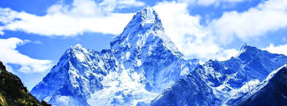
Page 8
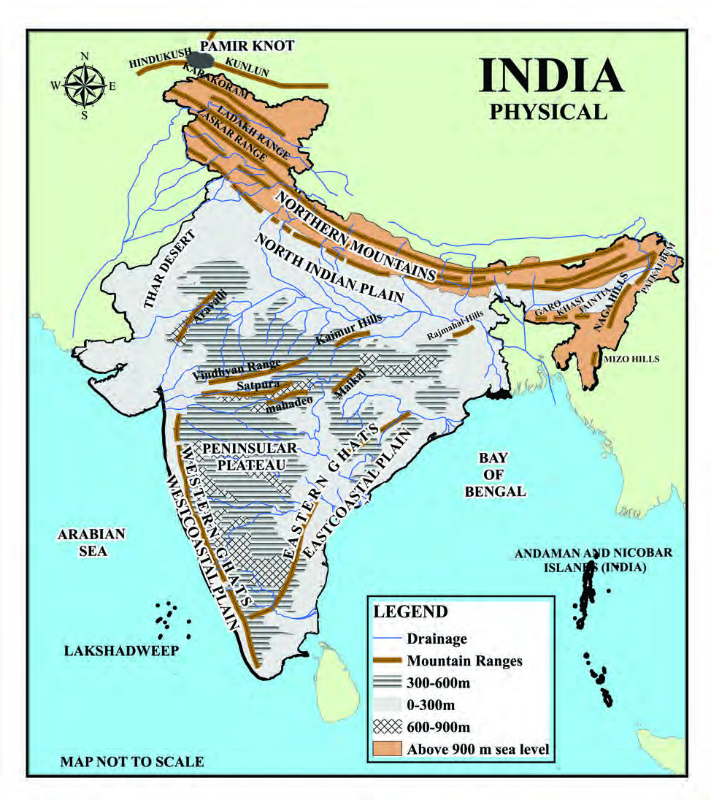

8
Part I
Social Science II
Fig 1.1
TIAN SHAN
TSANGPO
Page 9


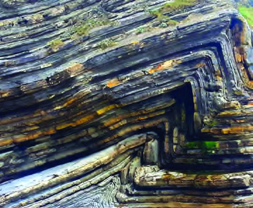

9
On the Roof of the World
Standard IX
The Northern mountain ranges that form the north and the
north eastern boundary of the Indian subcontinent includes
several mountain ranges that originate from the Pamir
Knot known as ‛the Roof of the World’ and it extends up to
Purvachal in the east.
The relatively young and lofty northern
mountain ranges have been formed by
the folding of rock layers. The Northern
mountain extends from River Indus in
the west to River Brahmaputhra in the
east for nearly 2400 km and has a width
ranging from 150 to 400 km. The region
has a peculiar landscape with several
high peaks, glaciers and valleys.
Based on the topographical characteristics,
the Northern mountain region can be
classified into three.
1.
Trans Himalayas
2.
The Himalayas
3.
The Eastern Hills
Observe the given map (Fig 1.1) and find the location of the
Northern mountains. Identify the other mountain ranges that
originate from the Pamir Knot and list them.
Kunlun
Fold Mountains
Fold mountains are formed due to
the compression of sedimentary rock
strata of the earth's crust. This process
is known as folding. The Himalayas
and the Alps were formed through this
process.
Generally mountains are the landforms with an average
elevation above 900 metres from the sea level. Observe the
given map (Fig1.1) and find the major mountain ranges in
India and include them in My Own Atlas.
Page 10
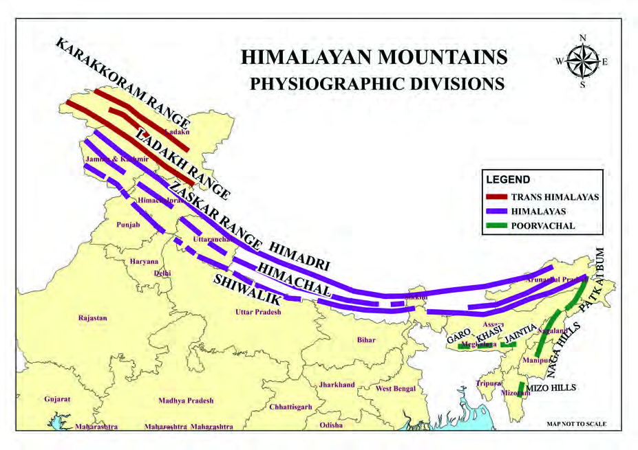


10
Part I
Social Science II
Now, you have familiarised with the major mountain ranges
of the Northern mountains and their location.
The northern most division of the Trans Himalayas is also
known as the Tibetan Himalayas. Having an average elevation
of 3000 metres, the Trans Himalayas has an approximate
width of 40 km and a length of 965 km. The Karakoram range
connects Himalayas with the Pamir Knot.
Fig 1.2
Complete the following table with the help of the given map
(Fig 1.2). The index of the map will help you complete this
work.
Trans Himalayas
Himalaya
Eastern Hills
Karakoram
Himadri
Naga Hills
Page 11

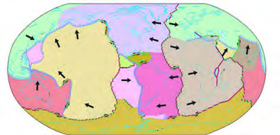
11
On the Roof of the World
Standard IX
Don’t you see three parallel ranges that extend to the south
of the Trans Himalayas towards the east? These parallel
mountain ranges are the Himadri, The Himachal and the
Shiwaliks. These three ranges together form the Himalayas.
The Shiwalik Range, which is the southern most of the
Himalayan ranges and forms the borders of the Ganga Plains,
has a width ranging from an average of 60 to 150 km. As it
is the outer most part, this range is also known as the Outer
Himalayas.
To the north of the Shiwaliks, is the Himachal mountain range,
with an average elevation ranging from 3500 to 4500 metres
above the mean sea level. This range is also known as the
Lesser Himalayas and has a width ranging from 60 to 80 km.
The Himadri, which is also known as
the Greater Himalayas or the Inner
Himalayas, is the mountain range
that lies at an average elevation of
about 6100 metres above the mean
sea level. The width of the range is
nearly 25 km. These are snow-clad
mountains.
Most of the world’s highest peaks
are situated in this range.
Origin of the Himalayas
Do you know that the Himalayas,
which is one of the lofty mountains
of the world, is still growing? What
may be the reason?
Observe the map (Fig1.2). Find the location of the Himadri, the
Himachal and the Shiwaliks from the map and list out the states
in which these ranges are situated.
Tectonic Plates
Lithospheric plate includes the crust and
the upper mantle. Lithosphere consists of
fragments of varying sizes. Portions of such
lithospheric parts, each with thousands
of kilometres of width and nearly 100 km
thickness are known as a lithospheric plates.
These plates may cover the continental
portion, ocean bottom or both.
Page 12
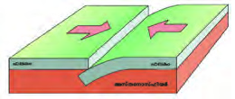
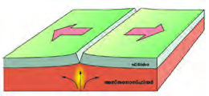


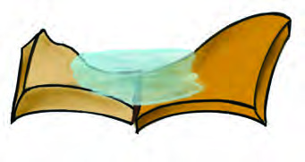
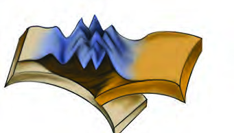
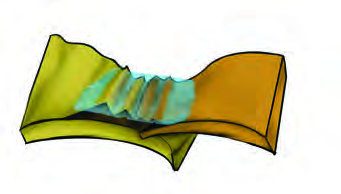
12
Part I
Social Science II
ചിത്രം 1.3 (a)
ചിത്രം 1.3 (b)
ചിത്രം 1.3 (c)
Convergent Boundary
Boundaries where plates move
towards each other.
Divergent Boundary
Boundaries where plates move away
from each other.
Transform Boundary
Boundaries where plates slide
past each other.
This is due to plate tectonics. Tectonic plates are the crustal
rock blocks of continental and oceanic parts. Asthenosphere is
the zone beneath the lithosphere where the rocks are molten
and are in a semi-plastic state due to the high temperature. The
tectonic plates move very slowly above the asthenosphere.
Earth processes like orogenic (mountain building) are active
along the plate boundaries. There are three types of plate
boundaries: Convergent boundaries, Divergent boundaries
and Transform (Shear) boundaries.
Rock layers along the convergent
boundary get folded due to the
compression of lithosphere plates.
This leads to the formation of fold
mountains.
The Indian Plate which includes the
Peninsular India and the Australian
continent was located in the southern
hemisphere about 150-160 million
years ago. As it moved northwards
and came close to the Eurasian Plate,
the Tethys seabed situated between
the two landmasses, started uplifting
(Fig 1.4). This is how the Himalayas
were formed.
Fig 1.4
Formation of the Himalayas
Tethys
Tethys
Himalaya
Himalaya
I
n
di
a
n
P
la
t
e
I
n
di
a
n
P
la
t
e
In
di
a
n
P
la
t
e
In
di
a
n
P
la
t
e
Fig 1.3 (a)
Fig 1.3 (b)
Fig 1.3 (c)
E
ur
as
ia
n
P
la
t
e
E
ur
as
ia
n
P
la
t
e
E
ur
as
ia
n
P
la
t
e
E
ur
as
ia
n
P
la
t
e
In
di
a
n
P
la
t
e
In
di
a
n
P
la
t
e
E
ur
as
ia
n
P
la
t
e
E
ur
as
ia
n
P
la
t
e
Page 13
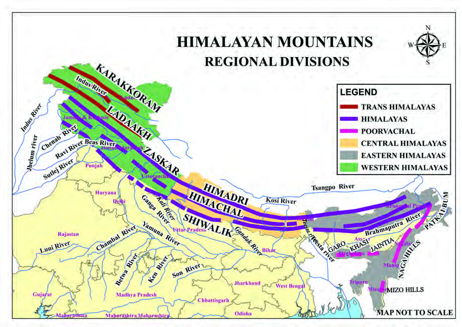
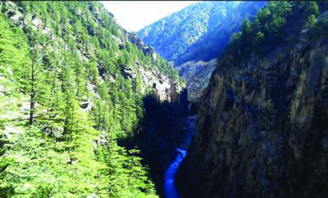


13
On the Roof of the World
Standard IX
Deep valleys with steep sides are known
as gorges. River Indus, River Ganga and
River Brahmaputhra create gorges across
the Himalayan ranges through erosion.
Gorges
In which plate boundary was the Himalayas formed?
(Fig 1.5)
A Gorge across the Himalayan Range.
The Himalayas and its
regional divisions
The rivers that originate from the
Himalayas create deep gorges
in their course. The regional
divisions of the Himalayas have
been made on the basis of these
cross-cutting rivers. The regional
divisions of the Himalayas are:
1. Western Himalayas
2. Central Himalayas
3. Eastern Himalayas
Fig 1.6
Page 14
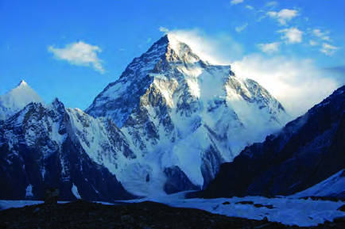


14
Part I
Social Science II
Himalayan Zone
Separating Rivers
Western Himalayas
Central Himalayas
Eastern Himalayas
Indus, Kali
Kali, Teesta
Teesta, Brahmaputhra
The Western Himalayas which
stretches from the Indus river
valley to the north of Jammu
and Kashmir upto the Kali
river valley (River Ghaghara's
tributary) in the eastern part of
Uttarakhand can be classified
into three: Kashmir Himalaya,
Himachal Himalaya, Uttarakhand
Himalaya.
Kashmir Himalaya
The Kashmir Himalaya which extends over nearly 3.5 lakh
sq.km in Jammu and Kashmir and Ladakh region is roughly
700 km long and 500 km wide.
The important mountain ranges of Kashmir Himalaya
containing snow covered peaks, valley and hill ranges are
Karakoram, Zaskar, Ladakh and Pir Panjal.
Mount K2 (Godwin Austin - 8611 metres), the second highest
peak in the world, is situated in the Karakoram range.
Fig 1.7
Mount K2
The table given below shows the three regional divisions of
the Himalayas and the rivers that separate them. Mark the
location of these divisions and rivers in the outline map of
India with the help of the given map (Fig 1.6).
Page 15
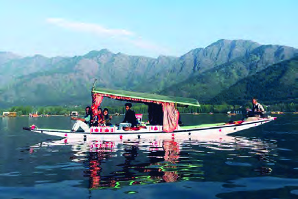

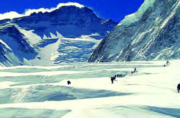


15
On the Roof of the World
Standard IX
Siachen,
Boltoro
etc.
are
the
important glaciers of this region.
These glaciers help the River Indus
and its tributaries, such as Ravi,
Jhelum and Chenab, have a luxuriant
water flow throughout the year.
The freight and passenger movement
on either side of the mountains is
made possible through the mountain
passes.
Passes are the comparatively easier
natural passages in the mountainous
terrains. Banihal Pass across the Pir-
Panjal Range that connects Jammu
with the Kashmir Valley is an example.
There are numerous fresh water
lakes in the Kashmir Himalaya
and Dal Lake is important
among
them.
Srinagar
is
situated
on
the
banks
of
this lake. It is an important
tourist and commercial centre
too. The Shikara boats and
floating markets are the hallmarks
of Kashmir tourism.
Fig 1.8
A Shikara Boat in Dal Lake
Siachen Glacier is known as the
world’s highest battlefield.
Siachen Glacier
Mark the important passes of the Himalayas in the outline map
of India and include it in My Own Atlas.
Why are the Himalayan rivers water-rich year-round?
Page 16
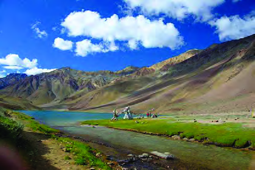
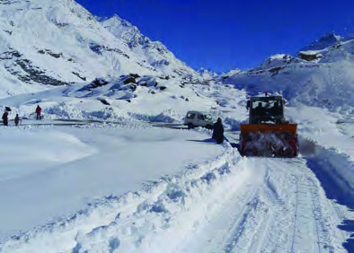
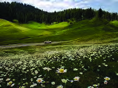


16
Part I
Social Science II
‘Margs’ are meadows formed along the mountain slopes
during the summer season. As these margs get covered under
snow during winter, the region attracts tourists for winter
games such as skiing. Sonmarg and Gulmarg are examples.
Himachal Himalaya
The major share of Himachal Himalaya is the state of Himachal
Pradesh. Chenab, Ravi and Beas are the important rivers in
this mountainous region.
Dhowladhar and Pir Panjal are the mountain ranges in this
region. Several freshwater lakes like Chandratal and Surajtal
are found in these mountain ranges. The Baralacha La Pass
that connects Himachal Pradesh with Ladakh and Rohtang
Pass that connects Kulu Valley with Lahul and Spiti Valleys
are the important passes in Himachal Himalaya.
Gulmarg
Summer Season
Winter Season
Fig 1.9 (a)
Fig 1.9 (b)
Fig 1.10
Chandratal Lake
Fig 1.11
Rohtang Pass
Page 17

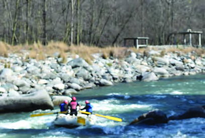


17
On the Roof of the World
Standard IX
Beautiful valleys such as Kulu,
Kangra and Lahul and tourist
centres such as Shimla and Manali
attract numerous tourists. In these
places where snowfall and mild
winters
are
experienced,
hot
springs can also be seen at a few
places.
Fig 1.12
Kulu Valley
Uttarakhand Himalaya
The Uttarakhand Himalaya is
part of the Himalayas which
extends from River Satluj to
River Kali. Its western side is
known as Gadwal Himalaya
and the eastern side is known
as Kumaon Himalayas.
Several high peaks such as
Nandadevi, Kamet, Badrinath,
Kedarnath etc. are situated in
the Uttarakhand Himalaya.
The Gangotri and Yamunotri glaciers from where the rivers
Ganga and Yamuna originate and freshwater lakes such as
Nainital and Bhimtal are also situated in this region.
Fig. 1.13
Nainital Lake
How are hot springs formed?
Rainwater seeps into the earth and becomes a part of the ground water. In areas where
mountain building processes (orogenic processes) are active, the sub surface rock layers
get heated up and these rock layers warm up the ground water. The ground water, thus
warmed, rises to the surface as hot springs. Numerous hot springs can be seen in the
Himalayan terrain, for eg., Nubra Valley, Manikaran, Kheerganga. Electric power can be
generated using this geothermal energy. Such a geothermal power plant is functioning at
Manikaran hotspring in Himachal Pradesh.
ST-287-2-SOC. SCI-II (E)-9-VOL-1
Page 18
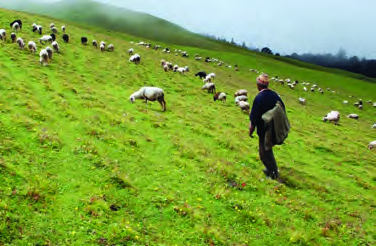


18
Part I
Social Science II
Bugyals and Shepherds
The meadows in the Himalayas found
between 3000 to 4500 metres (between
the tree line and the snow line) are
called bugyals in the Gadwal region.
Bugyals remain under snow during
winter. When the snow melts away in
summer, Bugyals are transformed into
green meadows. The shepherds reach
these meadows from the dry valleys
with their herds during the summer
season. Leaving their dry valleys, they make temporary camping sheds and
live along with their livestock in the luxuriant green bugyals. With the advent
of winter, they leave these hills and live in the valleys until the next season.
This seasonal migration along with their domestic animals from one grazing
ground to another is known as transhumance.
Fig 1.14
A Bugyal in the Gadwal Region
The flat valleys seen in between the Lesser Himalayas and the
Shiwalik hill ranges are Duns. Dehradun in Uttarakhand state
is famous among these.
The alpine summer meadows along the higher altitude
mountain slopes of this region are called ‘Bugyals’. The
Bugyals, when get buried under snow during winter, is made
use for winter tourism in many areas.
Eg:- Dayara Bugyal, Gorson Bugyal
Fig 1.15
Teesta River
Central Himalayas
The part of Himalayas from River
Kali to River Teesta is the Central
Himalayas. It is also known as the
Nepal Himalaya, since the majority
of this region falls in Nepal. Only
the Western Sikkim and Darjeeling
region of the Central Himalayas are
in India. The world’s highest peak –
Mount Everest-is in Nepal. Mount
Kanchenjunga and the Nathula Pass along the India-China
border are located in this region.
Page 19
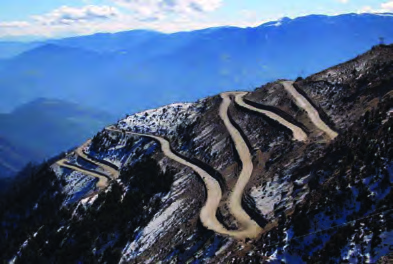
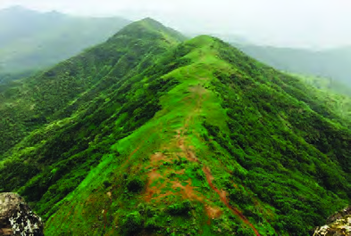


19
On the Roof of the World
Standard IX
Fig 1.16
Bomdila Pass
The swift flowing Teesta River and its stream terraces are the
features of the Sikkim Himalaya.
The British, having identified the favourable conditions, started
tea cultivation here during the colonial era. The Darjeeling tea
produced here is internationally famous.
Eastern Himalayas
These are low hills as compared to
the Western Himalayas, extending
from
River
Teesta
to
River
Brahmaputra in the east. This is
also known as Assam Himalayas.
The highest peak in this region is
Namcha Barwa (7756 m).
Brahmaputra, Kameng, Lohit and
Subansiri are the important rivers
in the Eastern Himalayas region.
The Bomdila which connects Arunachal Pradesh with Lhasa,
the capital city of Tibet and Diphu, which connects with
Myanmar, are the important passes
in this region.
Purvachal Hills
The Himalaya mountains are seen as
hills of lesser elevation in the north
– south direction from Arunachal
Pradesh up to Mizoram. These hills
having an average elevation from
500 to 3000 metres above mean sea
level are known as Purvachal Hills.
Of these the most important are the
Patkaibum, the Naga Hills, the Mizo Hills and the Manipur
Hills. Cherrapunjii and Mawsynram located here receive the
highest rainfall in the world.
Fig 1.17
A Hilly Area in the Purvachal Region
Find the parts of Central Himalayas in India from Fig 1.6 and
mark them in My Own Atlas.
Page 20

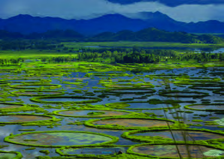

20
Part I
Social Science II
Fig 1.18
Root Bridge in Meghalaya
Keibul Lamjao Floating National Park
The Keibul Lamjao National Park is situated
in the largest freshwater lake of North Eastern
India (Manipur). The small islands formed in
the lake by the floating organic matter along
with soil are called Phumdi.
The Keibul Lamjao National Park consists of
several such phumdis in Loktak Lake. Each
phumdi contains unique ecosystems including
plants, birds and small organisms. The Loktak
Lake is included in the Ramsar List of Sites for
Watershed Conservation.
Phumdis in Loktak Lake
Fig 1.18 is the picture of a root
bridge, constructed by the local folk,
using braided tree roots in order to
cross turbulent streams. It is a clear
evidence of the harmonious co-
existence of people with nature.
Climate
The Himalayas, forming India’s northen boundary along with
the other continuous mountains together makes a climatic
divide between the Indian Subcontinent and Central Asia. The
climate of the Himalayan mountain zone varies according to
the elevation and the topography of the respective parts of the
region.
Mild climate prevails along the lower mountain slopes and
the Shiwalik foothills. But at higher elevations, it will be
considerably low temperature and winter climate conditions
at extremely high altitudes and in the Ladakh region, Pole-like
extreme winter climate is experienced.
Page 21


21
On the Roof of the World
Standard IX
South West Monsoon rains are received along the southern
slopes of the Shiwalik ranges and the North Eastern India.
Snowfall is common in the higher regions of the mountains.
The Monsoon winds blowing from the Bay of Bengal get
trapped in between the Assam Himalayas and the Purvachal
Hills. As a result, most of its moisture reaches back to earth as
rain. Hence, the North Eastern India, especially the Meghalaya
Plateau, receives heavy rainfall.
Drainage System
Indus, Ganga, and Brahmaputra
rivers along with their tributaries,
create the Himalaya drainage system.
As these rivers are rainfed and snow-
fed, they are perennial (water rich)
throughout the year.
These rivers have turbulent flow in
their mountainous course. Flooding
and channel deviation are common
in the plains. These rivers create land
forms such as V- shaped valleys,
gorges and waterfalls.
Why are there numerous hill stations in the Himalaya
Mountains?
Waterfall
Free fall of water vertically from a cliff
in the course of a river or stream is
called waterfall. It is caused due to the
excessive erosion of the soft rocks in
the course of rivers.
V- Shaped Valleys
During the course of river flow,
the lateral erosion leads to the
enhancement of width of the river
valley and the vertical erosion leads
to the depth of the valley. As a result
of the whole process, river valleys
with slanting sides are developed.
Since they resemble the English
alphabet ‛V’, the valleys are known as
V- shaped valleys.
The Himalayan rivers are flood prone even during summer.
Why?
Page 22

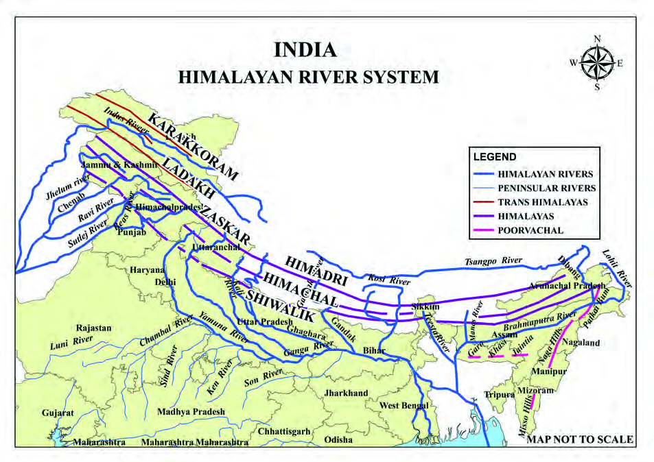

22
Part I
Social Science II
River Indus
originating from
Bokharchu glacier
near the Manasarovar
Lake and its
tributaries are the
important drainage
system of the North
Western Himalaya.
River Ganga originating
from the Gangotri
glaciers in Gomukh
and its tributaries such
as Yamuna, Ghaghara,
Gandak, Kosi etc. are
the important rivers of
Uttarakhand and Nepal.
River Brahmaputra
originating from
Chemayungdung glacier
near Manasarovar Lake
and its tributaries such
as Dibang, Lohit, Manas
etc. are the drainage
system of the Eastern
Himalaya.
Fig 1.19
Identify the Himalayan rivers from the map (Fig 1.19) and
prepare a Himalayan drainage map for ‛My Own Atlas’.
Page 23


23
On the Roof of the World
Standard IX
Fig 1.20
Saffron Cultivation
Soil
Mountain soil and forest soil are commonly seen in the
Himalayan terrain. The soil texture and particle size vary
according to mountain environment.
Fine grained soil with high humus content are seen in the
valleys, whereas in the high slopes,
coarse grained soil with low humus
content can be seen.
Alluvial deposition is mainly seen
in the valleys. Karewas is the glacial
sediment deposited in the Kashmir
Valley. This humus-rich fine soil is
ideal for saffron cultivation.
Natural Vegetation
Differences in factors like elevation, topography, soil type and
climate lead to regional variations in natural vegetation in the
Himalayan terrain.
As the average annual rainfall received is above 200 cm, more
tropical evergreen vegetation is found in the Eastern Himalayas
and the North Eastern Hills.
Temperature decreases with altitude and the corresponding
change is also visible in the natural vegetation of the Himalayan
Mountain region.
Depending on the changes in the altitude, a spectrum of natural
vegetation from evergreen forests to the vegetation type of the
cold climates such as Tundra can be found here.
What could be the reason for the occurrence of alluvial soil in
the valleys between the mountain ranges?
Page 24


24
Part I
Social Science II
Fig 1.21
Coniferous Forest in the Himalayan region
Major National Parks
Western Himalaya
Eastern Himalaya
Dachigam (Jammu & kashmir)
Kanchenjunga (Sikkim)
Hemis (Ladakh)
DibruSaikhowa (Assam)
Valley of Flowers (Uttarakhand)
Kaziranga (Assam)
Corbett (Uttarakhand)
Manas (Assam)
Rajaji National Park (Uttarakhand)
Keibul Lamjao (Manipur)
Fig 1.22
One-horned Rhinoceroses
Semi-evergreen and deciduous
forests are seen in the valleys
and the lower mountain slopes.
Moist deciduous forests are seen
at altitudes ranging from 1000
to 2000 metres. Coniferous tree
varieties such as pine and deodar
grow more along the mountain
slopes. Shrubs such as junipers
and rhododendrons grow at
higher altitudes whereas in the
highest altitude, alpine meadows
are seen.
Wild Life
Himalayan region is the natural
habitat of several wild animals
like yak, musk deer, single-
horned rhinoceros and snow
leopard.
Biosphere Reserves, National
Parks and Wildlife sanctuaries
have been established for wildlife
protection in the Himalayan
terrain.
Page 25


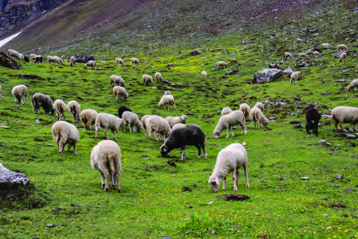

25
On the Roof of the World
Standard IX
Fig 1.24
An Apple Orchard in the Himalaya
Agriculture
Agriculture is sparse in the
mountainous region due to
the limitations of its terrain.
Elevation, steepness of slope,
immature soil, low temperature
etc. are the adverse factors.
Still the resident communities
engage in different subsistence
agricultural
activities.
They
terrace the mountain slopes
to cultivate suitable crops like paddy, legumes and potatoes
during the rainy season and wheat, and temperate fruit crops
during the spring.
Tea is a major crop along
mountain slopes and valleys of
Eastern Himalayas, especially
in the Assam and Darjeeling
regions.
The tribal population of the
North Eastern Hills, on the
other hand, follow traditional
practices
such
as
shifting
cultivation.
Animal rearing
Animal rearing is the main occupation of those living in the
Himalayan Mountains. Climate varies according to elevation
and the type of animals reared
also varies accordingly. Goat
and cattle are kept in the valleys
whereas sheep and horse are
reared in the mountain slopes.
At the extremely cold regions of
Himachal and Ladakh, species
that can resist severe cold such
as yak are reared. Gujjars are the
shepherd tribes who live in the
mountain meadows of Western
Himalayas.
Fig 1.23
A Terrace Farm in the Himalaya
Fig 1.25
Animal Husbandary
Page 26

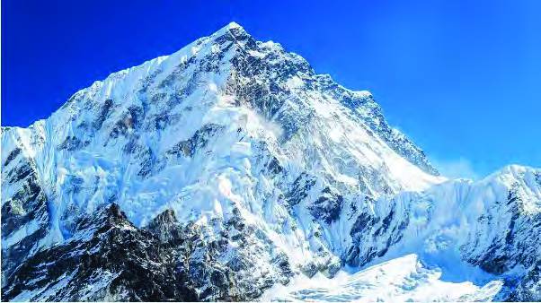
26
Part I
Social Science II
Inquire more about their life with the help of information
technology.
Tourism
As the geographical conditions are favourable, the entire
Himalayan region has become a zone with high economic
potential for tourism. Travels associated with pilgrimage were
what initiated the development of tourism in these regions.
There are several pilgrim centres in this region such as Kailas,
Manasarovar, Amarnath and Hema Kund Sahib. These places
have been attracting travellers for centuries.
The second phase of tourism development in the Himalayan
Mountain region began in the 19th century when the British
identified the area’s favourable climate. The resort towns such
as Shimla, Darjeeling, Shillong, Almora, Ranikhet, Mussoorie
and Nainital are important tourist centres.
The third stage of modern tourism development began in
the Himalayan region after the conquest of Mount Everest
by Sherpa Tenzing Norgay and Edmond Hillary on 29th
May 1953. Today the adventure tourism sector promoting
Mountaineering, Paragliding, skiing etc. has developed
significantly in this region.
'Mountains are not hindrances;
Mountains are not hindrances;
they are doors to the outer world'
they are doors to the outer world'
- Tenzing Norgay
Page 27


27
On the Roof of the World
Standard IX
The Himalaya is not an obstruction; instead, it is a door kept
open for the world beyond. The Himalayas open door to the
paths of new knowledge, sustenance and adaptation.
1. Prepare an essay on ‘Human life in the Northern
Mountains’.
2. Mark the mountain ranges that are part of the Northern
Mountains and incorporate the same in ‘My Own Atlas’
3. Prepare a pictorial wall magazine on the occupation of
people in the Northern Mountains.
Extended Activities